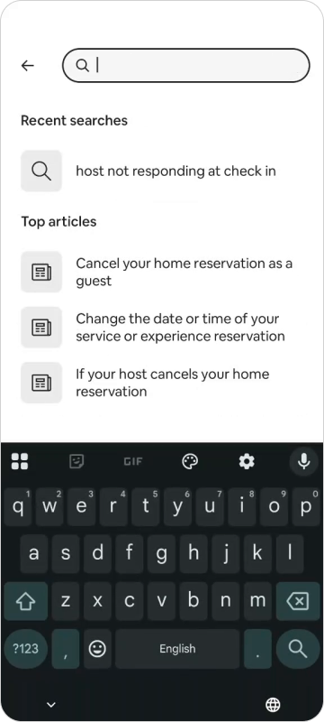
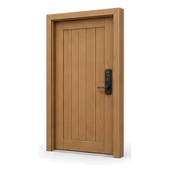
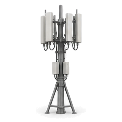
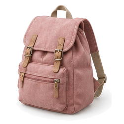
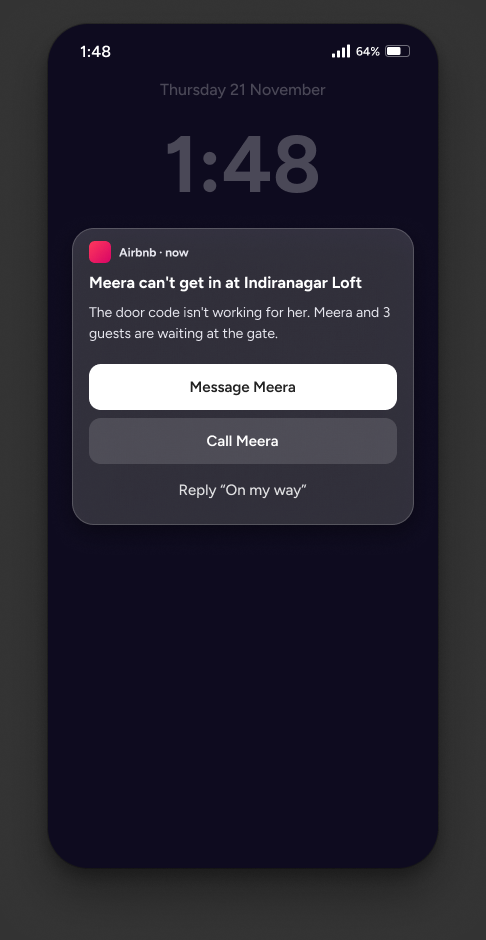
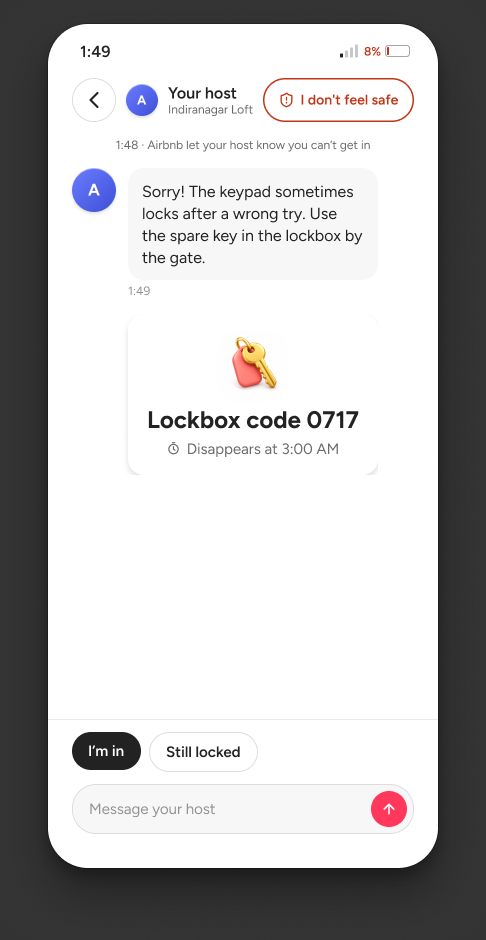
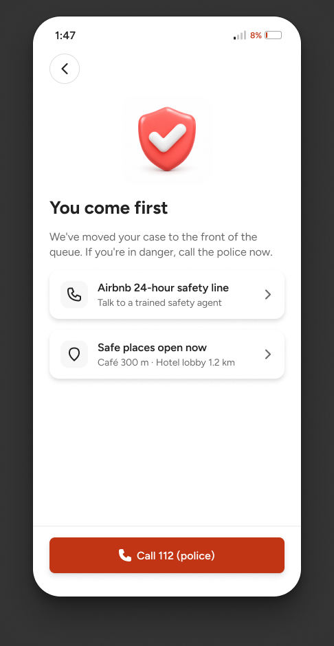

Route 1
Ask the Help Centre
- Profile
- Get help
- Help Centre
- Search
- Back at search
Help sits three taps deep under Profile. A search on 8% brings up 152 articles, and the right one says hosts have 24 hours to reply.



 Overnight busFour friends
Overnight busFour friends
 8% batteryOne bar of signal
8% batteryOne bar of signal
 Details in an emailSomewhere
Details in an emailSomewhere
Code failsKeypad blinks red
 Host asleepNo answer
Host asleepNo answer Four in the coldNobody to turn to
Four in the coldNobody to turn toMeera is 22 and was travelling with three friends. Afterwards she summed up the whole night in one line.
“Check-in shouldn’t fall apart when you arrive late with bad network.”
Meera, after the night
That was my first question and it sounded like an easy one. Airbnb has a help centre and a support chat, and it even has a policy for exactly this situation.
So I opened the app on one of my own past bookings and tried to get help the way Meera would have, standing at that gate with a dying phone. I recorded every tap.
I found four ways to look for help and none of them starts from the trip you’re standing outside.
Route 1
Help sits three taps deep under Profile. A search on 8% brings up 152 articles, and the right one says hosts have 24 hours to reply.

Route 2
The itinerary shows only a time. The address and the caretaker’s number are buried in weeks of chat with no map pin and nothing saved for offline.


Route 3
An AI assistant answers first. On a weak signal the message sits on “Sending” for 25 seconds and fails, and the reply that does arrive points her back to Trips.


Route 4
Every attempt opens a new thread that forgets the last one. One thread offers to connect her with a team member but there is nothing to tap.


Each problem on its own was survivable. What left four people in the cold is that no link had a backup, so when one broke the next had nothing to lean on.
InformationNo offline copy of the address or the code
ContextNothing in the app changed for 8% and one bar AccessNo second way in once the keypad failed
AccessNo second way in once the keypad failed AirbnbNo one who owned the case in that moment
AirbnbNo one who owned the case in that momentAirbnb’s own help page says to contact them if the host hasn’t replied within “a reasonable time”.
How long is that at 1:45 AM?
I couldn’t answer that with a promise. Nobody can guarantee that a lock gets fixed or a host wakes up in five minutes.
What I could change was the waiting. A wait feels endless when you don’t know what is happening or when it ends. So the answer became a process rather than a promise, one that shows Meera every step and finishes well before her battery does.
I started with the version of this night that goes right.
Meera calls and the host picks up within a minute. They tell her to hold the keypad button for five seconds and say the spare key is in the lockbox if that doesn’t work. Four minutes later the group is inside and the host texts “Sorry! Sleep well.” Nothing about that night is clever. It works because of four simple things.

She knew within a minute that she wasn’t alone.


The fix came from knowing their own keypad.
The spare key meant one failure wasn’t the end.


“Sleep well” is what she’ll remember.
When the host is silent the app has to give her those same four things on its own.
The aim
Inside, or somewhere safe to sleep, within ten minutes of asking for help.Ten minutes is how long the process runs. It is not a promise about the lock.
Whatever helps her at the gate also wakes someone up or costs someone money. A fix that only works for the guest turns into a free refund button, or a host who stops accepting late arrivals.

The guests
Cold and tired with one booking shared between four phones.
Needs to know the next step and to get inside or get a bed.
Asleep at 2 AM
If every lockout wakes them five times they will stop taking late arrivals.
Needs one clear alert and a fair chance to fix it.

Airbnb’s team
A small team with a queue at 2 AM. Every minute spent asking what happened is a minute Meera doesn’t have.
Needs the whole story the moment they pick it up.
The business
A refund is cheaper than losing a guest for good. A button that hands out refunds to anyone is worse than both.
Needs trust kept and hosts kept without inviting abuse.
Most ways of making a guest feel certain need something new, like a smart lock on every door or a person on call all night. I aimed for the top left, with as much certainty as possible built from what Airbnb already has.
What the others do better
 TuroA 30 minute clock, so a guest knows exactly when to escalate.
TuroA 30 minute clock, so a guest knows exactly when to escalate. HotelsWhen a room can’t be honoured they book you elsewhere and pay the first night.
HotelsWhen a room can’t be honoured they book you elsewhere and pay the first night. Booking.comTries to find an alternative, but the guest still does the chasing.Smart locksCertain, but only for hosts who own one. A night concierge is certain too but needs staff at every listing.
Booking.comTries to find an alternative, but the guest still does the chasing.Smart locksCertain, but only for hosts who own one. A night concierge is certain too but needs staff at every listing.Three ideas kept coming up across all of them. There is a clock, there is a record of what was tried, and there is one door to a human.
Thursday night in Indiranagar, Bengaluru. The stay is Indiranagar Loft on a quiet and badly lit street, and the door code is 4821.
The host is asleep and a co-host is listed as a backup contact. In the app they only ever appear as “your host” and “your co-host”. On the other side Ananya is working the night shift in support.
 Aisha78%The hostAsleepAnanyaNight supportThe gateKeypad lock
Aisha78%The hostAsleepAnanyaNight supportThe gateKeypad lockCan someone tell Meera within a minute that it’s being handled?
Can that still work at 8% with one bar of signal?
Can we reach the host without waking them over and over?

Can she have a real option for the night by minute ten?

And what about the three people standing next to her?
I wrote these as questions the night itself would ask, not as a list of features. Each one comes from a link in the chain where Meera was left on her own.
Each one also had to hold up for the host and for Airbnb. From here on every idea needed to answer at least one of them, or it didn’t belong in the night.
Before drawing a single screen I listed what the night takes away. These became the hard edges of every idea.
Data drops in and out. A text message usually gets through when an app request doesn’t.
At 8% one long call or a heavy page can end it, so every screen has to be light.
It is whatever the host installed, so the answer can’t depend on a smart lock.
They are probably asleep with the phone on silent, and that is normal at 2 AM.
Night support exists but it has a queue, so I can’t promise a time.
No AI that guesses what she needs and no hardware Airbnb doesn’t already own.
The trip and its check-in details are saved on the phone once Meera has opened them before she travels. AirCover covers a night like this. I left the amount off the screen on purpose because nobody should be weighing prices at the gate.Airbnb can move the booking to a nearby stay using the details it already has, with no new checkout for Meera.
AirCover covers a night like this. I left the amount off the screen on purpose because nobody should be weighing prices at the gate.Airbnb can move the booking to a nearby stay using the details it already has, with no new checkout for Meera.I wrote fifty ideas against those five questions. They ranged from things Airbnb could ship next sprint to things that would be ideal but hard.
 Made it into the flowLeft outHover or tap any idea to see why
Made it into the flowLeft outHover or tap any idea to see whyMade it in“Next update by 1:50” turns an open wait into a short one. It is the first thing Meera sees after she asks for help.
Made it inSeeing “Ringing your host · 1:48” shows the work being done. The same log later protects the host and helps support.
Left outA named person at a fixed time is a promise night support can’t always keep. The flow gives an honest estimate instead.
Left outThis would need a large night team at all times. It is the ideal, but not something Airbnb could ship.
At 8% and one barMade it in“Waiting for signal” and then “Sent” stops her from tapping send again and again on a dying phone.
Made it inAfter two minutes without signal the alert goes out as a text from her phone on its own. There is no setting to turn on first.
Left outUseful, but it is a whole new phone system to run. Support calling her back covers most of the same need.
Left outIt helps her find the code but does nothing once the lock fails, which is the real problem here.
Made it inThe host gets one alert that rings through only if they allowed it, instead of a stream of messages and calls.
Made it inThe first glance offers one action, “Message Meera”. A call and a quick “On my way” sit one step deeper.
Left outIt might work once, but hosts who get woken repeatedly stop hosting late arrivals.
Left outMost hosts don’t own one. The answer has to work with any lock.
An option by minute tenMade it in“Step 2 of 4 · Reaching your host” says how far along the night is without putting a time on anything that hasn’t happened.
Made it inOnly places that are open now and fit the group are shown, with the booking details already moved over.
Left out after review“Options by 1:56” was in round three. A time on screen is a promise the host or the queue can break, so it went in round four.
Left outA free night for anyone who taps a button would be abused. Options only appear inside the support chat, after the attempts are logged.
Left outPartnerships in every city are a long-term business deal. It stays on the list as a later ideal.
Made it inSaying no moves the case to the front of the queue and shows safe places nearby.
Made it inIf Meera’s phone dies, Aisha can carry on from a link that opens in any browser without the app.
Left outIt only works in a few big cities and needs a fleet of people at night. That is the kind of operation the brief rules out.
Left outGuessing her state from sensors is magic. Asking her one clear question is honest and works better.
I laid the ideas that made it along the ten minutes after Meera asks for help. Each beat has something she can see and a fallback if it fails.
After each round of screens I checked every one against the brief and pinned whatever missed, and the next round had to fix every pin. Round three passed every check, and then a design review found what a checklist couldn’t.
Round 1 · rough screens
Round 2 · Airbnb’s visual style
Round 3 · every check passed
Round 4 · final
The review asked for the times to go. I tried four ways to show how far along the process is and judged each on whether it could turn out wrong and what it costs to read at 8%.
Option 1 · chosen
It answers “how far along?” and never “how long?”, so nothing on screen can turn out wrong.
Option 2
Left out. A bar near the end reads as “almost done” even when the host may never answer.
Option 3
Left out. It repeats the step list right below it on a dying phone.
Option 4
Left out. In round two a ring beside the 8% battery was read as a second battery.
The trip opens on the door code, saved earlier so nothing needs a signal, and only Meera can see it. Her friends sit on the trip as a stack of faces. When the code fails, help is one obvious tap away.
She picks “The code isn’t working” and reads that her host only hears from Airbnb if the quick fixes don’t work.
 A case opens and the ten minute clock starts behind the scenes. If there is no signal the request waits and sends itself.
A case opens and the ten minute clock starts behind the scenes. If there is no signal the request waits and sends itself.
Two steps from the host’s guide give her the same local knowledge they would on the phone. “Alert now” is there if she can’t wait, so she stays in control.
A bar fills one stage at a time, from the quick fixes to the host, the co-host and Airbnb support. Nothing that hasn’t happened yet has a time on it, so nothing on the screen can turn out to be wrong.
Airbnb rings the host’s phone with an alert they chose to allow, so Meera doesn’t have to call. Chats with the host and with support wait as two bubbles at the top.
The alert is small and offers a single thing, “Message Meera”. The door code never appears on the lock screen.
Opening the alert shows three replies in order of effort. Messaging Meera comes first, then a call, then “On my way” in one tap.
The step turns green, the host’s chat bubble gets a badge and a preview of the reply appears on the hub, so she doesn’t have to go looking in her inbox.
The lockbox code arrives as a card inside the chat with the host, marked “Disappears at 3:00 AM”. Quick replies let her answer “I’m in” or “Still locked” without typing.
The last screen doesn’t remind her of the lockout. People remember the end of a night more than its middle, so it points forward to the house manual and the Wi-Fi details and closes with one button.






Then Airbnb carries the rest of the night.
At 1:51 the hub shows that the host and co-host didn’t pick up and that Ananya from Airbnb support has the case, with every attempt already in front of her. Her chat opens as a real conversation, and options for the night only appear in there once the attempts are logged.
A stay for four close by is booked with the details moved over, so there is no new checkout. The new stay is covered by Airbnb, and a button to message support stays on the booked screen.


Losing the signal doesn’t stop anything. The screen shows a low-signal icon, a bar and a timer so she knows how long it has been waiting, and if calls still work she can ring Airbnb support straight away.
After two minutes the alert goes out as a text from her phone on its own, and the updates sit right under the network card. She is offered the nearest safe place or a link for her group, and if nobody is following along by 1:55 Airbnb calls her to check in.
The link goes to one friend she picks, with their number shown and a “Not right?” link to fix it. A small note says that when she is offline the text goes from her phone at her usual SMS rate.


“I don’t feel safe” sits at the top of every help screen. One tap offers a call to 112 first, because a real emergency shouldn’t wait for Airbnb. After that comes Airbnb’s 24-hour safety line, which already exists as its Urgent Support Line, and a list of places nearby that are open right now.

No signal, no battery and no answer from the queue yet. Even then Meera isn’t starting from nothing, because two things don’t depend on her phone being alive.
The safety line, the booking and the nearest place open all night work with zero signal.

The case keeps running on Airbnb’s side, so whoever reaches out next picks up where it stopped from any phone.
A “can’t get in” button can easily become a free refund button. So every generous moment in the flow is tied to something the system can check.
Options only appear in the support chat, after logged attemptsSomeone who isn’t at the door can’t produce a host alert, a call and a wait, and there is nothing on the hub to tap through to a free night.The group link sees one case onlyIt expires, Meera can end it at any time and it never shows payment or personal details.Always knows the next step and how far along it is. Inside by 1:50 or a bed by 1:58, without typing once.
Rung once at most, only if they allowed it, with a reply they can send from the lock screen. They wake up to a fair record and not a pile of missed calls.
One case instead of six threads, joined only when the host couldn’t fix it and with the whole story attached.
An early fix that costs less than a refund, a rebooking and a one-star review, with hosts protected and abuse limited.
Less than it looks. Most of the flow rearranges things Airbnb already runs so that they show up in the right order at the right moment.
Time from tapping for help to being inside or booked.
How many lockouts the host solves with one tap.
Support contacts per lockout and time spent per case.
If cases reach options without logged attempts, or hosts start muting the alert.
The story above reads in a straight line, but the work went round in loops. This is the path it actually took.